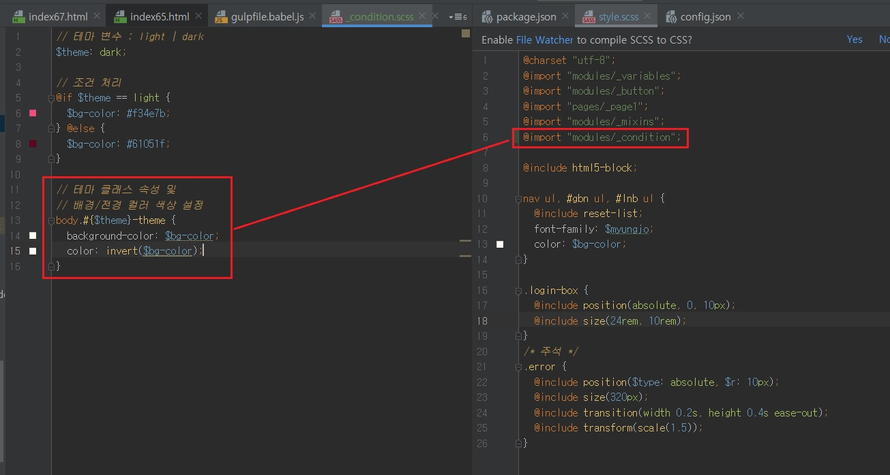
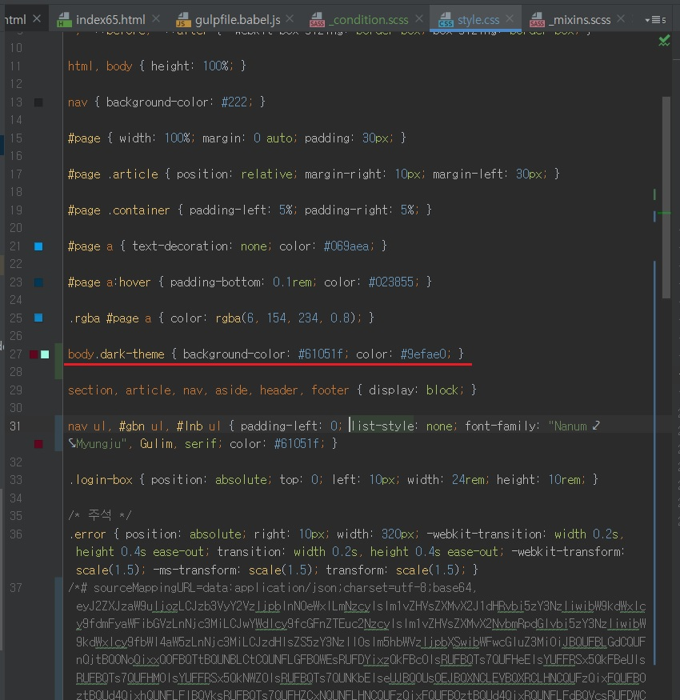
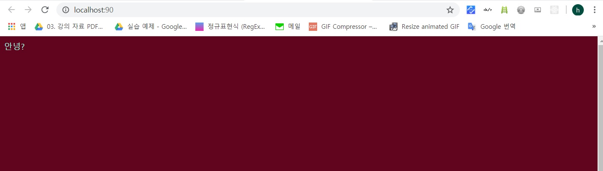
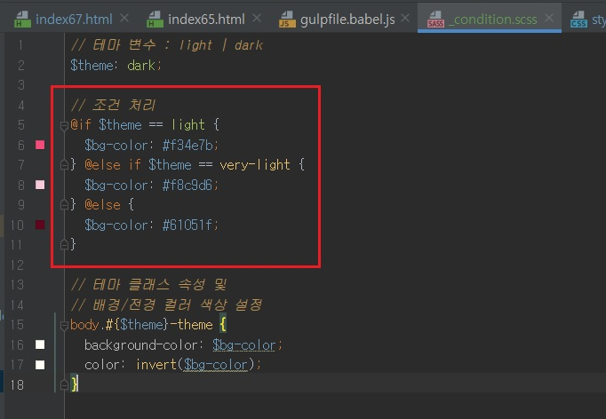

Sass 조건문(Conditions) 사용하기
- Sass 조건문(Conditions) 사용하기
-
Jade에서 if 조건문을 다루었습니다.
Sass 언어에서도 if 조건문을 사용할 수 있습니다.
사용 방법은 Jade와 유사하며, if 앞에 @ 기호를 붙인다는 점이 다릅니다.
실습으로 알아보겠습니다.
먼저 modules/_condition.scss 파일을 생성한 후 style.scss 파일에서 호출하는 코드를 입력합니다.
다음을 참고하여 테마 설정에 따라 body 요소의 배경색과 전경색이 변경되도록 코드를 입력합니다.



위의 코드를 해석하면 다음과 같습니다.
- 변수 $theme를 선언하고 dark 값을 대입합니다.
- @if 조건문에서 조건($theme == light)을 확인하여 조건이 참(true)이면 변수 $bg-color 값으로 #f34e7b 를 대입합니다.
- 조건이 거짓(false)이면, @else 코드 블록이 실행되어 변수 $bg-color 값으로 #61051f를 대입합니다.
- body 요소의 class 속성 값으로 #{$theme}-theme 이 설정됩니다. ${}는 문자열을 접할 때 사용하며, 변수 $theme 값과 뒤에 붙은 문자열 -theme을 합칠 수 있도록 설정합니다.
이를 보간법(Interpolation)이라고 합니다. 현재 변수 $theme 값이 dark이기에 결과 값은 dark-theme이 됩니다. 해당 결과는 위 스크린샷에서 확인할 수 있습니다.
- body 요소의 배경색(background-color)과 전경색(color)으로 각각 변수 $bg-color 값과 invert() 함수로 처리된 변수 $bg-color 값을 대입합니다.
invert() 함수는 Sass가 지원하는 색상 함수로 설정된 색상과 정반대 색상을 출력합니다. 즉, 보색을 출력합니다.
조건을 하나 더 추가하려면 @else if 구문을 사용합니다.
이 구문으로 조건을 검사한 후 처리하도록 코드를 추가할 수 있습니다.
